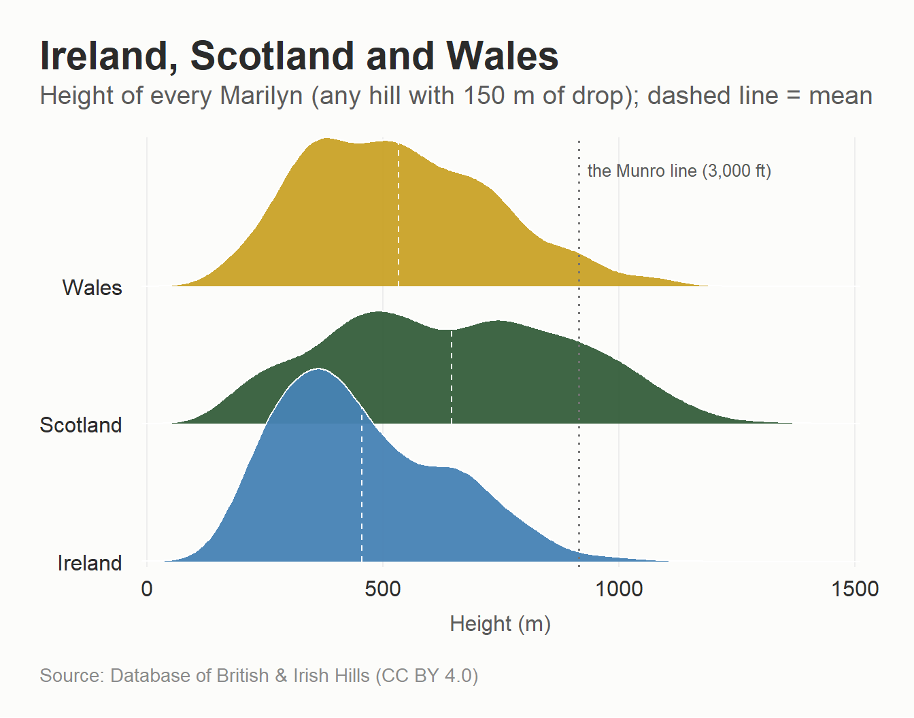
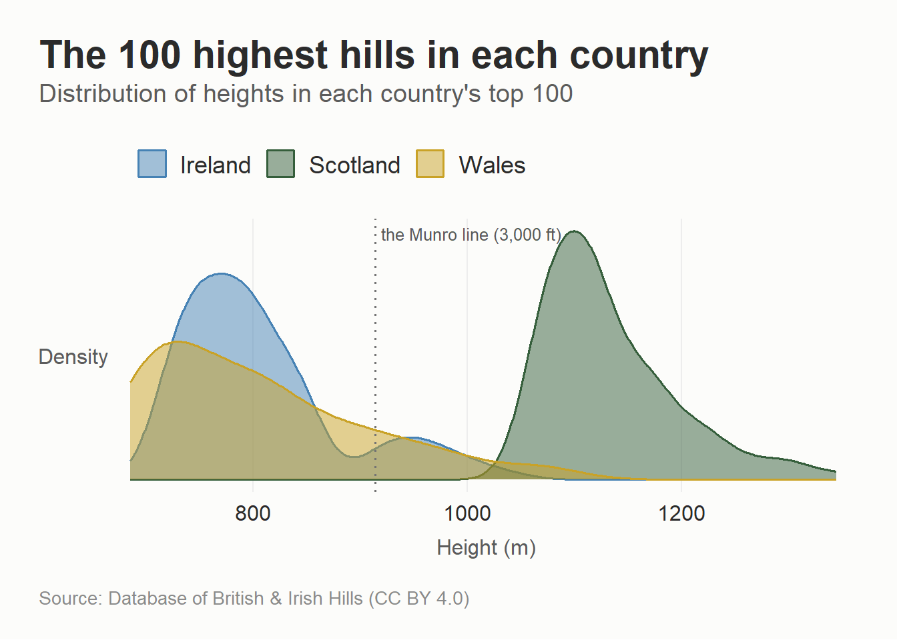
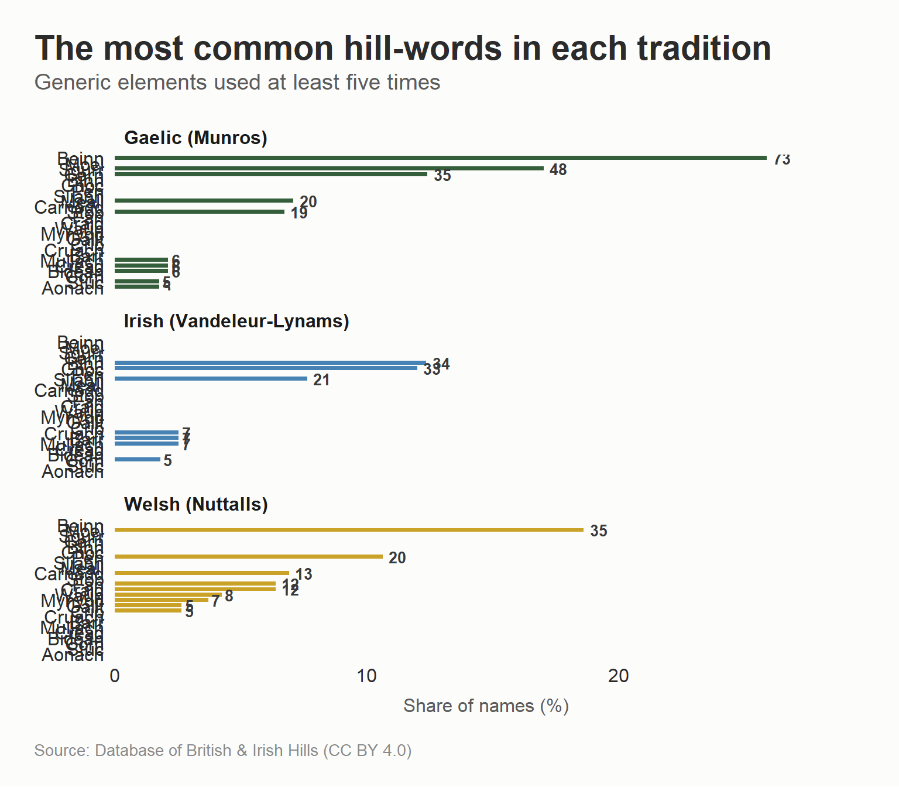

After the Welsh post I got an email from a reader in Ireland who volunteers with MountainViews and who has recently completed the Vandeleur-Lynams, the Irish list of 600 m hills, at the age of 74, which I am choosing to take as both an inspiration and a deadline. They suggested looking further west as the Irish mountains are all in the same DoBIH database I’ve been using, and that MountainViews has name meanings and descriptions for the lot, which is exactly the kind of excuse for procrastination I am here for. This is now the fourth post in what has apparently become a series, after the Munros, the Corbetts, the Gaelic of the Munro names, and the Welsh comparison.
The language angle is a bit different this time. Welsh and Gaelic are distant cousins from branches of Celtic that split a very long time ago, but Irish and Scottish Gaelic are closer so where the Welsh post was about whether two distantly related languages describe mountains the same way, this one is about what happens when essentially the same naming tradition gets applied to two different landscapes.
On the sources, the translations and etymologies here use Paul Tempan’s Irish Hill and Mountain Names glossary hosted by MountainViews, and his article on Irish mountain names and their international links, which it turns out already does the Ireland-Scotland-Wales comparison properly and is well worth reading in full. If this post has mangled any Irish, apologies in advance, and corrections are welcome.
Data sources
Same as last time, this uses the full Database of British and Irish Hills, which treats the island of Ireland as a single country, north and south together, so that’s what “Ireland” means throughout this post. Wales is also included in the comparison, using the Welsh Nuttalls (2,000 ft with 15 m of prominence), so the height and vocabulary charts below can put all three nations on the same axis.
The Irish lists deserve a moment of appreciation, because they are what you would design if you started from scratch with no Victorian baggage. The Scottish lists are imperial and idiosyncratic, 3,000 ft for a Munro with no prominence rule at all beyond the SMC’s judgement, 2,500 ft and 500 ft of drop for a Corbett. The Irish lists, maintained by MountainViews, are metric and prominence-based throughout. A Vandeleur-Lynam is any Irish hill of at least 600 m with 15 m of prominence, an Arderin is at least 500 m with 30 m, and a Binnion is a low hill under 400 m with 100 m of drop. There is also the Dillons, the Irish 2,000-footers with no prominence criterion at all, which structurally is the closest thing Ireland has to the Munro definition, right down to the arguments about which tops count.
Show code
library(tidyverse)library(stringi)library(flextable)library(ggridges)library(scales)# The nature palette from the previous posts, extended with gold for Wales,# named so scale_*_manual() maps colours correctly regardless of row ordernature_3 <-c(Scotland ="#355E3B", Ireland ="#4682B4", Wales ="#C9A227")# Classification codes are comma-separated in one column, with s (sub) and# x (deleted) prefixes, so "M" mustn't match "MT", "Ma", or "sM"has_class <-function(classification, code) {str_detect(classification, paste0("(^|,)", code, "(,|$)"))}required_cols <-c("munro", "corbett", "furth", "vl", "arderin", "binnion","dillon", "marilyn", "simm", "nuttall")needs_rebuild <-!file.exists("dobih_scotland_ireland_wales.csv") ||!all(required_cols %in%names(read_csv("dobih_scotland_ireland_wales.csv",n_max =0, show_col_types =FALSE)))if (needs_rebuild) { tmp <-tempfile(fileext =".zip")download.file("https://www.hills-database.co.uk/hillcsv.zip", tmp, mode ="wb") files <-unzip(tmp, exdir =tempdir())read_csv(files[str_detect(files, "csv$")][1]) |> janitor::clean_names() |>filter(country %in%c("S", "I", "W")) |>mutate(munro =has_class(classification, "M"),corbett =has_class(classification, "C"),furth =has_class(classification, "F"),vl =has_class(classification, "VL"),arderin =has_class(classification, "A"),binnion =has_class(classification, "Bin"),dillon =has_class(classification, "Dil"),marilyn =has_class(classification, "Ma"),simm =has_class(classification, "Sim"),nuttall =has_class(classification, "N") ) |>filter(munro | corbett | furth | vl | arderin | binnion | dillon | marilyn | simm | nuttall) |>select(number, name, metres, drop, classification, country, county, xcoord, ycoord, all_of(required_cols)) |>write_csv("dobih_scotland_ireland_wales.csv")}hills <-read_csv("dobih_scotland_ireland_wales.csv") |>mutate(country_name =case_when( country =="S"~"Scotland", country =="I"~"Ireland", country =="W"~"Wales" ))munros <- hills |>filter(country =="S", munro)corbetts <- hills |>filter(country =="S", corbett)vls <- hills |>filter(country =="I", vl)welsh_nut <- hills |>filter(country =="W", nuttall)
A fair comparison across all three nations is the Marilyns, because 150 m of drop with no height requirement means the same thing everywhere. Scotland has 1,218 of them, Ireland has 454, and Wales has 159, and here’s the height distribution for all three, with the Munro line marked.
Show code
marilyns <- hills |>filter(marilyn)ggplot(marilyns, aes(metres, country_name, fill = country_name)) +geom_density_ridges(quantile_lines =TRUE, quantile_fun = mean,vline_linetype ="dashed",colour ="white", linewidth =0.4,scale =1.4, alpha =0.95) +geom_vline(xintercept =914.4, linetype ="dotted", colour ="grey45") +annotate("text", x =914.4, y =3.85, label ="the Munro line (3,000 ft)",hjust =-0.05, size =3.4, colour ="grey35") +scale_fill_manual(values = nature_3, guide ="none") +scale_y_discrete(expand =c(0.02, 0)) +scale_x_continuous(expand =c(0.01, 0)) +labs(x ="Height (m)", y =NULL,title ="Ireland, Scotland and Wales",subtitle ="Height of every Marilyn (any hill with 150 m of drop); dashed line = mean",caption = hill_cap) +theme_munro() +theme(panel.grid.major.x =element_line(colour ="#EDEDED", linewidth =0.4))

NoteHow to read this plot
Each coloured hump is a “ridgeline”, one per country, and it shows how the heights of that country’s Marilyns are spread out, not a count of hills over time. Where the hump is tall and narrow, lots of hills cluster around that height; where it’s low and wide, heights are more spread out. The dashed line inside each hump marks the average height for that country, and the dotted grey vertical line marks the Munro threshold (3,000 ft) so you can see at a glance how much of each country’s hills clear it. Reading left to right along the bottom axis tells you height in metres; the vertical stacking of the three shapes is just there to keep the countries visually separate, it isn’t a scale.
The average Marilyn is 646 m in Scotland, 454 m in Ireland, and 532 m in Wales. Carrauntoohil, at 1038.6 m the highest point in Ireland, would rank 94th among the Munros, though it sits just below Yr Wyddfa, the highest point in Wales at 1085 m. Wales actually edges Ireland at the very top, with 5 summits over 1,000 m to Ireland’s 2 and a highest point 46 m taller, while Scotland, in a different league, has 191. Ireland’s advantage is not its highest peaks but the sheer quantity of high ground beneath them, because the MacGillycuddy’s Reeks are a proper little alpine range where Eryri tails off.
The clearest comparison though is the top hundred from each country.
Show code
top100 <- hills |>group_by(country_name) |>slice_max(metres, n =100, with_ties =FALSE) |>ungroup()ggplot(top100, aes(metres, fill = country_name, colour = country_name)) +geom_density(alpha =0.5, linewidth =0.7) +geom_vline(xintercept =914.4, linetype ="dotted", colour ="grey45") +annotate("text", x =914.4, y =Inf, label ="the Munro line (3,000 ft)",hjust =-0.03, vjust =1.6, size =3.4, colour ="grey35") +scale_fill_manual(values = nature_3, name =NULL) +scale_colour_manual(values = nature_3, name =NULL) +scale_x_continuous(expand =expansion(mult =c(0.01, 0.02))) +labs(x ="Height (m)", y ="Density",title ="The 100 highest hills in each country",subtitle ="Distribution of heights in each country's top 100",caption = hill_cap) +theme_munro() +theme(axis.title.y =element_text(size =rel(0.8), colour ="#5C5C5C",margin =margin(r =8)),axis.text.y =element_blank(),panel.grid.major.y =element_blank())

Scotland’s hundredth-highest hill still clears 1055 m, Ireland’s hundred run down to 719 m, and Wales, with only fifteen 3,000-footers to its name, runs out of high ground fastest of all, its hundredth hill down at 686 m. The band table for the Simms (everything over 600 m with 30 m of drop) tells the same story.
Show code
hills |>filter(simm) |>mutate(band =case_when( metres >=914.4~"Over 3,000 ft (914.4 m)", metres >=762~"2,500 to 3,000 ft",TRUE~"600 m to 2,500 ft" ),band =factor(band, levels =c("Over 3,000 ft (914.4 m)","2,500 to 3,000 ft","600 m to 2,500 ft"))) |>count(band, country_name) |>pivot_wider(names_from = country_name, values_from = n, values_fill =0) |>rename(Height = band) |>flextable() |>autofit()
Height
Ireland
Scotland
Wales
Over 3,000 ft (914.4 m)
12
441
15
2,500 to 3,000 ft
38
675
30
600 m to 2,500 ft
172
1,073
105
Ireland has 13 Furths, the SMC’s word for 3,000-footers outside Scotland, and unlike Wales’s they are not all in one corner, they’re split between Kerry’s Reeks and Brandon in the far south-west, Galtymore in the Galtees on the Limerick–Tipperary border, and the Wicklow outlier of Lugnaquilla in the east. Wales’s 15 Furths, by contrast, genuinely are all in one corner of Eryri, which is why some walkers do the Welsh 3000s in a single day.
The language of the hills
Here’s where Ireland gets interesting, because the linguistic problem is completely different from Wales. Welsh mutation swaps initial consonants, which is annoying to code around. Irish names have a different obstacle, which is that the Ordnance Survey anglicised them. Scotland’s maps, whatever else you want to say about the colonial history of the OS in the Highlands, largely kept Gaelic orthography, so a Munro is Sgùrr nan Gillean on the map and in the database. Ireland’s mountains mostly went through a nineteenth-century phonetic mangle, so Corrán Tuathail is on the map as Carrauntoohil, Cnoc na dTobar became Knocknadobar, and Sliabh Dónairt became Slieve Donard (Tempan’s glossary lists these forms and dozens more). The Irish is still in there, but it’s been respelled by an English speaker writing down what they heard, and glued into single words while they were at it. Scotland writes Cnoc na dTobar as three words, Ireland writes Knocknadobar as one.
So the classifier below has to catch each generic in both its Irish spelling and its anglicised disguise, binn but also Ben-, Been- and Bin-, cnoc but also Knock- and (in Ulster) Crock-, cruach but also Croagh-. As before, first match wins, everything unrecognised goes in “Other”, and this is an approximation that will get some individual hills wrong, including some that even the professionals argue about (Tempan notes that a couple of hills called Corran or Carran are probably carn rather than corrán).
Here are the generics, with their anglicised map forms.
Show code
tibble::tribble(~Element, ~`On the map`, ~Meaning,"Sliabh", "Slieve-", "The classic Irish mountain word - a mountain, a range, or moorland","Cnoc", "Knock-, Crock-", "A hill - the most common element of all in Irish hill names","Binn / Beann", "Ben-, Been-, Bin-", "A peak, point or cliff","Cruach", "Croagh-", "A stack or rick - hills with a haystack profile","Mullach", "Mullagh-", "A summit or top","Carn", "Carn-", "A cairn; by extension a stony hill","Maol", "Mweel-, Meel-", "Bald - a bare rounded hill","Droim", "Drum-", "A back or ridge","Carraig / Creig", "Carrick-, Craig-", "A rock or crag","Barr", "Barr-, Baur-", "A top or summit","Corrán", "Carraun-", "A sickle or crescent","Stuaic", "Stumpa-, Stook-", "A pointed pinnacle","Log", "Lug-", "A hollow (yes, a hollow - see below)","Com", "Coum-", "A corrie or mountain recess","Suí", "See-", "A seat, usually somebody legendary's") |>flextable() |>autofit()
Element
On the map
Meaning
Sliabh
Slieve-
The classic Irish mountain word - a mountain, a range, or moorland
Cnoc
Knock-, Crock-
A hill - the most common element of all in Irish hill names
Binn / Beann
Ben-, Been-, Bin-
A peak, point or cliff
Cruach
Croagh-
A stack or rick - hills with a haystack profile
Mullach
Mullagh-
A summit or top
Carn
Carn-
A cairn; by extension a stony hill
Maol
Mweel-, Meel-
Bald - a bare rounded hill
Droim
Drum-
A back or ridge
Carraig / Creig
Carrick-, Craig-
A rock or crag
Barr
Barr-, Baur-
A top or summit
Corrán
Carraun-
A sickle or crescent
Stuaic
Stumpa-, Stook-
A pointed pinnacle
Log
Lug-
A hollow (yes, a hollow - see below)
Com
Coum-
A corrie or mountain recess
Suí
See-
A seat, usually somebody legendary's
Two of those deserve a word before the counting starts, both from Tempan’s glossary. Lugnaquilla, the highest thing in Ireland outside Kerry, is Log na Coille, the hollow of the wood, a 925 m mountain named after a dent in it, which is a distinctly unaspirational naming decision. And suí names hills after seats of legendary figures, most commonly Fionn mac Cumhaill, so every Seefin on the map (and there are several) is “Fionn’s seat”, doing roughly the job that cadair does in Wales, right down to being attached to a giant.
Show code
classify_irish <-function(x) { key <- x |>stri_trans_general("Latin-ASCII") |>str_replace_all("\\[.*?\\]", "") |>str_to_lower() |>str_replace_all("[-']", " ") |>str_squish()case_when(str_detect(key, "^slieve|\\bsliabh\\b") ~"Sliabh",str_detect(key, "^(knock|crock)|\\bcnoc") ~"Cnoc",str_detect(key, "^carraun") ~"Corrán",str_detect(key, "^(been|ben|binn?|beann)|\\b(binn|beann)\\b") ~"Binn",str_detect(key, "^croagh|\\bcruach") ~"Cruach",str_detect(key, "^mullagh|\\bmullach") ~"Mullach",str_detect(key, "^carn|\\bcarn\\b") ~"Carn",str_detect(key, "^(mweel|meel|moyle)|\\bmaol") ~"Maol",str_detect(key, "^(drum|drom)|\\b(droim|drom)\\b") ~"Droim",str_detect(key, "^(carrick|craig)|\\b(carraig|creig)\\b") ~"Carraig",str_detect(key, "^(barr|baur)") ~"Barr",str_detect(key, "^(stumpa|stook)|\\bstuaic") ~"Stuaic",str_detect(key, "^lug|\\blog\\b") ~"Log",str_detect(key, "^coum|\\bcom\\b") ~"Com",str_detect(key, "^seefin|^seahan|\\bsui\\b") ~"Suí",TRUE~"Other" )}vls <- vls |>mutate(element =classify_irish(name))# The Gaelic classifier from the Munro post, for the comparison chartsclassify_gaelic <-function(x) { key <- x |>stri_trans_general("Latin-ASCII") |>str_to_lower() |>str_replace_all("[-']", " ") |>str_squish()case_when(str_detect(key, "\\b(sgurr|sgor|sgorr|sgur)\\b") ~"Sgùrr",str_detect(key, "\\b(bidean|bidein|spidean|spidein)\\b") ~"Bidean",str_detect(key, "\\b(stuc|stuchd|stucd|stac)\\b") ~"Stùc",str_detect(key, "\\b(stob)\\b") ~"Stob",str_detect(key, "\\b(binnein|binnean)\\b") ~"Binnein",str_detect(key, "\\b(beinn|bheinn|ben)\\b") ~"Beinn",str_detect(key, "\\b(carn|charn|cairn|cairngorm|cairnwell)\\b") ~"Càrn",str_detect(key, "\\b(meall|mheall)\\b") ~"Meall",str_detect(key, "\\b(mullach)\\b") ~"Mullach",str_detect(key, "\\b(cnoc)\\b") ~"Cnoc",str_detect(key, "\\b(aonach)\\b") ~"Aonach",str_detect(key, "\\b(creag|chreag|craig)\\b") ~"Creag",str_detect(key, "\\b(maol|maoile|mhaoile)\\b") ~"Maol",str_detect(key, "\\b(tom)\\b") ~"Tom",str_detect(key, "\\b(sail|saileag|saile)\\b") ~"Sàil",TRUE~"Other" )}munros <- munros |>mutate(element =classify_gaelic(name))corbetts <- corbetts |>mutate(element =classify_gaelic(name))# The Welsh classifier from the Welsh post, so the Nuttalls can join the# comparison charts below rather than just being described in proseclassify_welsh <-function(x) { key <- x |>stri_trans_general("Latin-ASCII") |>str_to_lower() |>str_replace_all("[-']", " ") |>str_squish()case_when(str_detect(key, "\\b(crib|grib|cribyn|cribin)") ~"Crib",str_detect(key, "\\b(corn|gorn)\\b") ~"Corn",str_detect(key, "\\bpen") ~"Pen",str_detect(key, "\\b(fan|ban|bannau|fannau)\\b") ~"Fan",str_detect(key, "\\b(carnedd|garnedd|carn|garn)") ~"Carnedd",str_detect(key, "\\b(moel|foel)") ~"Moel",str_detect(key, "\\b(mynydd|fynydd)") ~"Mynydd",str_detect(key, "\\b(craig|graig|creigiau)") ~"Craig",str_detect(key, "\\b(cadair|gadair|cader|gader)\\b") ~"Cadair",str_detect(key, "\\b(waun|gwaun|weun)\\b") ~"Waun",str_detect(key, "\\b(esgair|esgeiriau)") ~"Esgair",str_detect(key, "\\b(cefn|gefn)\\b") ~"Cefn",str_detect(key, "\\b(drum|trum|drym)\\b") ~"Drum",str_detect(key, "\\b(tarren|taren|darren)") ~"Tarren",str_detect(key, "\\b(gallt|allt)\\b") ~"Gallt",str_detect(key, "\\b(bryn|fryn)") ~"Bryn",TRUE~"Other" )}welsh_nut <- welsh_nut |>mutate(element =classify_welsh(name))# Scotland has two flagship lists (Munros, Corbetts) where Ireland and Wales# have one each; for the three-nation comparison charts below they're pooled# into a single Scottish group rather than shown as a fourth/fifth categoryscots <-bind_rows(munros, corbetts)# Shared labels and word familieslab_s <-paste0("Scotland (n = ", nrow(scots), ")")lab_vl <-paste0("Vandeleur-Lynams (n = ", nrow(vls), ")")lab_w <-paste0("Welsh Nuttalls (n = ", nrow(welsh_nut), ")")gaelic_pointed <-c("Sgùrr", "Bidean", "Stùc", "Stob", "Binnein")gaelic_rounded <-c("Càrn", "Meall", "Maol", "Mullach")irish_pointed <-c("Binn", "Cruach", "Corrán", "Stuaic")irish_rounded <-c("Cnoc", "Mullach", "Maol", "Droim", "Carn")welsh_pointed <-c("Crib", "Corn")welsh_rounded <-c("Moel", "Carnedd", "Bryn", "Cefn", "Waun")
For the Irish side this uses the 275 Vandeleur-Lynams, partly in honour of my correspondent and partly because at 275 hills against 282 Munros it is the first list in this series that is nearly the same size as the thing I’m comparing it to. The usual caveat applies that the definitions differ, 600 m with 15 m of prominence is not 3,000 ft with none, so as ever this is a comparison of naming habits, not of like-for-like hills. The chart below adds Wales’s 188 Nuttalls alongside, so all three naming traditions from this series sit side by side for the first time rather than being described one post at a time.
Show code
top_words <-bind_rows( munros |>transmute(list ="Gaelic (Munros)", total =nrow(munros), element), vls |>transmute(list ="Irish (Vandeleur-Lynams)", total =nrow(vls), element), welsh_nut |>transmute(list ="Welsh (Nuttalls)", total =nrow(welsh_nut), element)) |>filter(element !="Other") |>count(list, total, element) |>filter(n >=5) |>mutate(pct = n / total *100)ggplot(top_words, aes(pct, fct_reorder(element, pct), fill = list)) +geom_col(width =0.76) +geom_text(aes(label = n), hjust =-0.35, size =3.6,fontface ="bold", colour ="#3A3A3A") +facet_wrap(~list, scales ="free_y", ncol =1) +scale_x_continuous(expand =expansion(mult =c(0, 0.14))) +scale_fill_manual(values =c("Gaelic (Munros)"="#355E3B","Irish (Vandeleur-Lynams)"="#4682B4","Welsh (Nuttalls)"="#C9A227"),guide ="none") +labs(x ="Share of names (%)", y =NULL,title ="The most common hill-words in each tradition",subtitle ="Generic elements used at least five times",caption = hill_cap) +theme_munro() +theme(panel.grid.major.x =element_blank(),strip.text =element_text(face ="bold", hjust =0))

The sliabh problem
One of the main differences is in the use of Sliabh. This is used often in Irish mountain names, e.g., Slieve Donard and Slieve League and half the ranges in Ulster, and it names 21 of the 275 Vandeleur-Lynams. Scottish Gaelic has exactly the same word but it names 0 Munros. Not few, none (Tempan makes this point too, so at least this regex agrees with the professionals). In Scotland sliabh came to mean moorland, and it survives in place names mainly on Jura and in Galloway, where it got anglicised as “slew”.
Cnoc does the same trick in reverse. In Scotland a cnoc is a bump; the word turns up on just 1 hill in the Munro and Corbett lists combined, Cnoc Coinnich, a Corbett in the Arrochar Alps, and is otherwise confined to wee knolls in the north-west. In Munster it names serious mountains, Cnoc na Péiste in the Reeks is nearly a thousand metres.
The cognates, for the record, since this time they’re mostly just the same words wearing different accents. I’ve kept the Welsh column from last time so the whole family is in one place.
Those two “no cognate” entries need a word, because they don’t mean Welsh has no way of naming a summit or a mountain. It has plenty: a summit is a copa, a mountain a mynydd, and moorland is gwaun or rhos. None of them is a cognate of the Goidelic word alongside, though, and none does the heavy lifting in Welsh hill names that mullach and sliabh do in Irish and Scottish ones, so there is simply nothing to put in the Welsh column here.
One of the more striking pairs in Tempan’s article is Beenkeragh, the second-highest mountain in Ireland, which is Binn Chaorach, the peak of the sheep, and which has an exact twin called Beinn Chaorach near Tyndrum, a Corbett near the West Highland Way.
Colour me Éire
The glas problem is now confirmed as a pan-Goidelic condition. Irish glas covers the same grey-green-blue smear as its Scottish twin, modern Irish uses it for green where Scottish Gaelic drifted blue, and the mountains of both countries use it for whatever colour wet upland grass is. Welsh even keeps a cognate of Irish breac (speckled), brych, both descending from the same Proto-Celtic root (Wiktionary), so the chart below sets all three colour vocabularies side by side for the first time, Gaelic from the Munros and Corbetts, Irish from the Vandeleur-Lynams, and Welsh from the Nuttalls.
The extra wrinkle for Ireland is anglicisation again, dubh hides as -duff and -doo, bán as -baun and -bane, buí as -boy (Barraboy is Barr Buí, yellow top, not a warning about local children), and breac, speckled, as -brack (Tempan’s glossary again).
A caveat there, the anglicised Irish patterns are doing more guesswork than the Gaelic ones, because matching “doo” at the end of a glued-together word is riskier than matching dubh as a word in its own right, so treat the Irish bars as estimates and if you spot any errors please get in touch.
One genuine absence is worth flagging: not a single Vandeleur-Lynam carries a word for red. Dearg and rua are perfectly ordinary Irish colour words, but across all 275 hills on the list they turn up precisely nowhere, where Scotland has its dearg and ruadh summits and Wales its coch. The Irish hills run to black, white, yellow and the endless grey-green glas, but nobody, it seems, has ever looked at one and called it red.